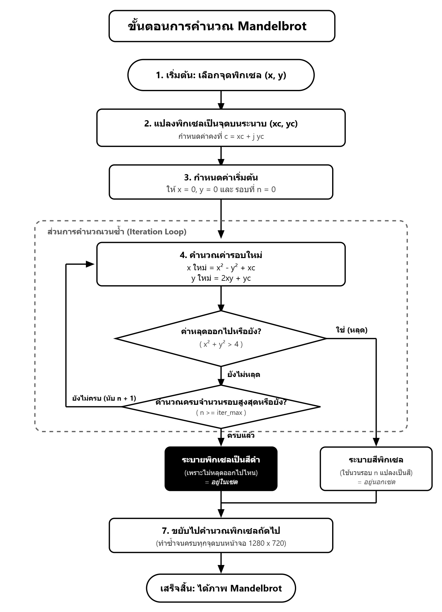
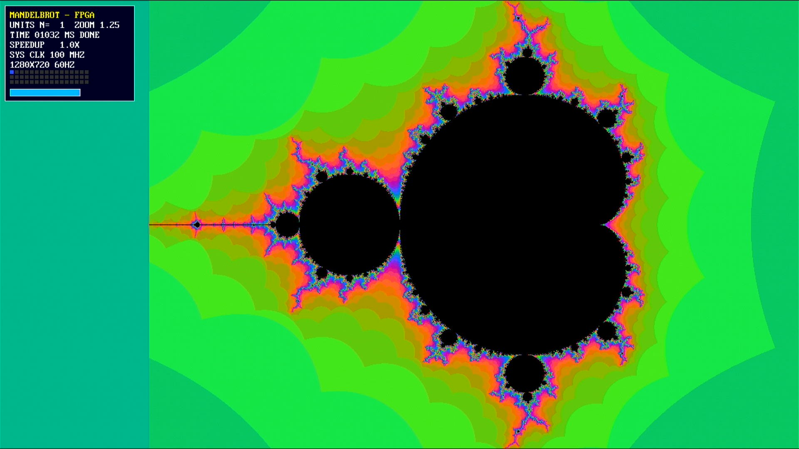
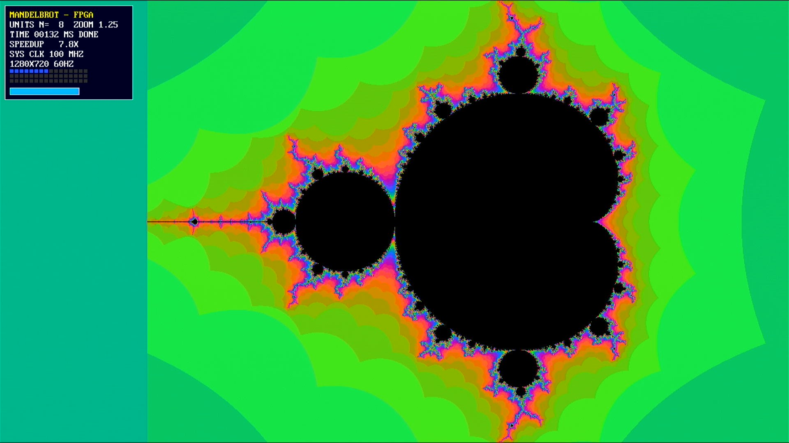
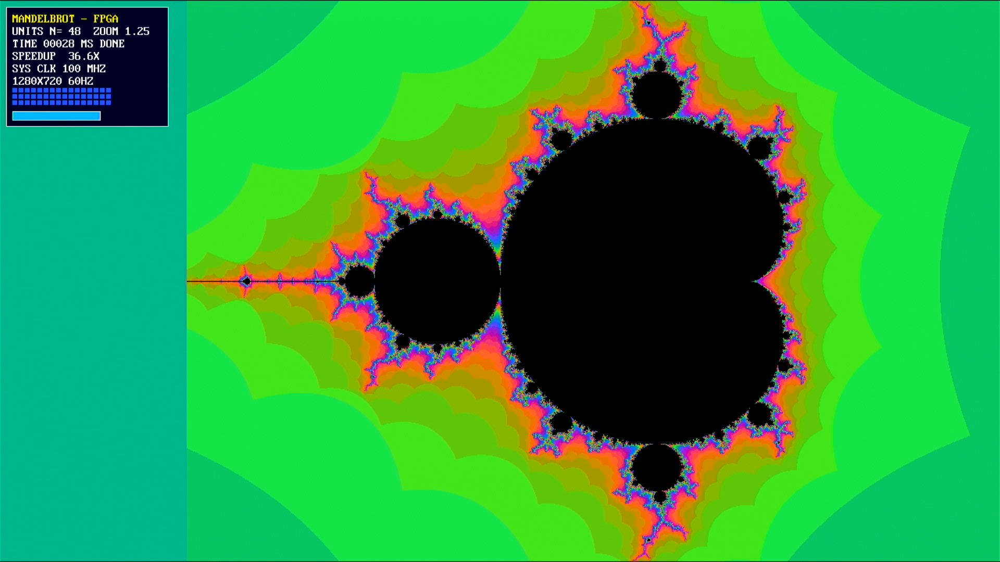
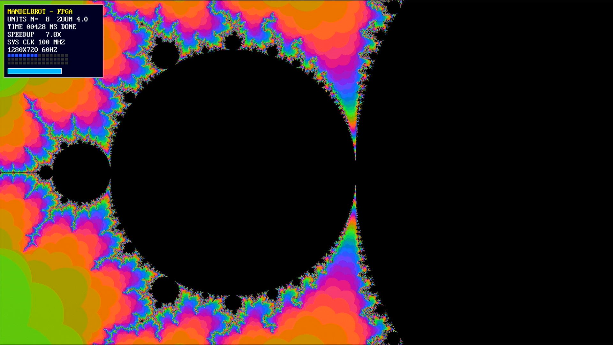
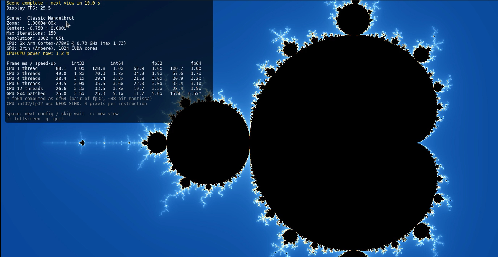

Mandelbrot (แมนเดลบรอต)#
Keywords: Fractal Images, Mandelbrot, Parallel Programming, Hardware Parallelization
▷ Mandelbrot คืออะไร?#
Mandelbrot set (เซตแมนเดลบรอต) คือเซตทางคณิตศาสตร์ที่เกิดจากการคำนวณสมการอย่างง่ายซ้ำ ๆ โดยใช้จำนวนเชิงซ้อน (Complex Number) แต่กลับสร้างรูปทรงที่มีรายละเอียดซับซ้อนอย่างน่าทึ่ง
เซตนี้เป็นตัวอย่างหนึ่งของ แฟร็กทัล (Fractal) ซึ่งมีลักษณะเด่นคือ เมื่อซูมเข้าไปดูบริเวณขอบของรูป เราจะพบรายละเอียดและลวดลายที่ซับซ้อนเพิ่มขึ้นเรื่อย ๆ แม้จะขยายภาพเข้าไปลึกมากเพียงใด ก็ยังสามารถพบรายละเอียดที่น่าสนใจได้อีก ทั้งนี้ลวดลายที่ปรากฏไม่จำเป็นต้องเป็นรูปเดิมซ้ำกันทุกประการ
Benoit Mandelbrot เป็นนักคณิตศาสตร์ที่มีบทบาทสำคัญในการทำให้แนวคิดเรื่องแฟร็กทัลเป็นที่รู้จักอย่างกว้างขวาง อย่างไรก็ตาม แนวคิดและรากฐานทางคณิตศาสตร์ที่เกี่ยวข้องกับเซต Mandelbrot มีที่มาจากผลงานของนักคณิตศาสตร์คนอื่น ๆ ก่อนหน้านั้นด้วย การสร้างภาพแมนเดลบรอตบนคอมพิวเตอร์ ทำได้โดยคำนวณทีละพิกเซล (Pixel) โดยแต่ละพิกเซลแทนค่าจำนวนเชิงซ้อนหนึ่งค่า จากนั้นนำค่านั้นไปคำนวณซ้ำตามสมการที่กำหนด
หากค่าที่คำนวณได้เพิ่มขึ้นจนหลุดออกจากขอบเขตที่กำหนด เราจะนำจำนวนรอบที่ใช้ก่อนหลุดออกไปแปลงเป็นค่าสีของพิกเซลนั้น ส่วนพิกเซลที่ยังไม่หลุดภายในจำนวนรอบสูงสุดที่กำหนด จะระบายเป็นสีดำตามรูปแบบการแสดงผลที่เลือก
แม้สมการจะเรียบง่าย แต่เมื่อคำนวณครบทุกพิกเซล เราก็จะได้ภาพที่สวยงามและมีรายละเอียดซับซ้อน ซึ่งเป็นตัวอย่างที่ดีของการนำคณิตศาสตร์มาใช้สร้างภาพด้วยโปรแกรมคอมพิวเตอร์

รูป: ไดอะแกรมแสดงขั้นตอนการคำนวณ (Flowchart) ตามอัลกอริทึมของ Mandelbrot
▷ ขั้นตอนการสร้างภาพ Mandelbrot#
สมมติว่าต้องการสร้างภาพ Mandelbrot บนจอภาพขนาด พิกเซล
1. แปลงพิกัดพิกเซลเป็นพิกัดบนระนาบเชิงซ้อน#
เริ่มจากเลือกพิกเซลที่มีพิกัด บนจอภาพ โดยกำหนดให้พิกัดเริ่มจากมุมซ้ายบน แล้วแปลงพิกัดดังกล่าวให้เป็นพิกัดจำนวนจริง บนระนาบเชิงซ้อน ด้วยสมการ
ในกรณีตัวอย่างนี้ การแปลงพิกัดนี้กำหนดให้แสดงบริเวณของระนาบเชิงซ้อนในช่วงโดยประมาณ
โดยช่วงค่าจริงที่ได้ขึ้นอยู่กับพิกัดพิกเซลที่ใช้ ซึ่งเริ่มจาก 0 ถึง และ 0 ถึง ตามลำดับ
2. กำหนดจำนวนเชิงซ้อนและค่าเริ่มต้น#
นำพิกัด ที่ได้จากพิกเซลมาใช้เป็นส่วนจริงและส่วนจินตภาพของจำนวนเชิงซ้อน
โดย เป็นหน่วยจินตภาพ ซึ่งนิยมใช้สัญลักษณ์ ในทางวิศวกรรมไฟฟ้า
กำหนดจำนวนเชิงซ้อนเริ่มต้นเป็น
3. คำนวณสมการวนซ้ำ#
ใช้สมการ Mandelbrot
โดย คือค่าจำนวนเชิงซ้อนในรอบที่ และ เป็นค่าคงที่เชิงซ้อนที่ได้จากพิกเซลนั้น
หากเขียนจำนวนเชิงซ้อน ในรูป
จะสามารถแยกสมการออกเป็นส่วนจริงและส่วนจินตภาพได้ดังนี้
ดังนั้น สมการสำหรับคำนวณในแต่ละรอบคือ
โดยเริ่มต้นจาก และ และต้องใช้ค่า จากรอบก่อนหน้าในการคำนวณค่ารอบถัดไป
4. ตรวจสอบเงื่อนไขการหยุดคำนวณ#
การคำนวณจะทำซ้ำไปเรื่อย ๆ จนกว่าจะเข้าเงื่อนไขใดเงื่อนไขหนึ่งต่อไปนี้
เงื่อนไขที่ 1: จุดหลุดออกจากเซต (Escape Condition)
หรือเขียนในรูปส่วนจริงและส่วนจินตภาพได้เป็น
หากเงื่อนไขนี้เป็นจริง จะถือว่าจุดดังกล่าวอยู่นอกเซต Mandelbrot และสามารถหยุดคำนวณได้ โดยนำจำนวนรอบ ที่ใช้ก่อนหลุดออกไปแปลงเป็นค่าสี RGB ของพิกเซลนั้น
เงื่อนไขที่ 2: ครบจำนวนรอบสูงสุด
กำหนดจำนวนรอบสูงสุดเป็น iter_max หากคำนวณครบจำนวนรอบที่กำหนดแล้ว แต่ยังไม่พบเงื่อนไขการหลุดออกจากเซต จะระบายพิกเซลนั้นเป็นสีดำ
ดังนั้น สีดำจึงหมายถึง จุดที่ยังไม่หลุดออกจากเซตภายในจำนวนรอบสูงสุดที่กำหนด โดยการคำนวณนี้ยังไม่สามารถยืนยันได้อย่างแน่นอนว่าจุดดังกล่าวอยู่ในเซต Mandelbrot จริง ๆ แต่ถือเป็นการประมาณเพื่อใช้แสดงผลภาพ
5. กำหนดสีและทำซ้ำจนครบทุกพิกเซล#
เมื่อได้ผลการคำนวณของพิกเซลหนึ่งแล้ว ให้นำจำนวนรอบที่ใช้ก่อนหลุดออกไปกำหนดค่าสี RGB ตามฟังก์ชันการไล่สีที่เลือก ส่วนพิกเซลที่ไม่หลุดภายในจำนวนรอบสูงสุดจะเป็นสีดำ
จากนั้นทำขั้นตอนทั้งหมดซ้ำกับพิกเซลอื่น ๆ จนครบทั้งภาพ เมื่อประมวลผลครบทุกพิกเซลแล้ว จะได้ภาพ Mandelbrot ที่มีรูปทรงและรายละเอียดซับซ้อน
▷ การประมวลผลแบบขนาน#
แต่ละพิกเซลสามารถคำนวณแยกจากกันได้ เพราะแต่ละพิกเซลมีค่าคงที่เชิงซ้อน และชุดตัวแปรสำหรับการวนซ้ำเป็นของตนเอง จึงเหมาะกับการประมวลผลแบบขนานได้หลายรูปแบบ เช่น การใช้หลายเธรดบน CPU หรือการแบ่งงานให้เธรดจำนวนมากบน GPU หรือการออกแบบวงจรดิจิทัลโดยใช้ FPGA เพื่อการประมวลผลแบบขนาน
อย่างไรก็ตาม จำนวนรอบที่ใช้คำนวณของแต่ละพิกเซลอาจแตกต่างกัน ขึ้นอยู่กับตำแหน่งบนระนาบเชิงซ้อนและจำนวนรอบที่ใช้ก่อนหลุดออกจากเซต ซึ่งเป็นหนึ่งในปัจจัยที่มีผลต่อประสิทธิภาพของการประมวลผลแบบขนาน
FPGA-based Parallel Processing#
แนวทางหนึ่งสำหรับการเรียนรู้ โดยใช้ Mandelbrot เป็นจุดเริ่มต้น ในมุมมองของวิศวกรรมคอมพิวเตอร์คือ การออกแบบวงจรสำหรับสร้างภาพ Mandelbrot และแสดงผลบนจอภาพ ในตัวอย่างนี้ ได้ทดลองใช้บอร์ด Terasic DE10-Lite ซึ่งใช้ชิป FPGA ตระกูล MAX 10 และมีพอร์ต VGA สำหรับเชื่อมต่อกับจอภาพ
เพื่อแสดงให้เห็นหลักการทำงานแบบขนานในระดับฮาร์ดแวร์ของ FPGA จึงได้ออกแบบหน่วยประมวลผลสำหรับคำนวณค่า Mandelbrot และแปลงผลการคำนวณเป็นค่าสีของแต่ละพิกเซล โดยใช้การแทนข้อมูลแบบ fixed-point สามารถสร้างหน่วยประมวลผลได้สูงสุด 48 ชุด และทดลองใช้จำนวนหน่วยประมวลผล (N) แตกต่างกัน ได้แก่ N = 1, 2, 4, 8, 16, 32 และ 48 (สูงสุด) ตามลำดับ
นอกจากนี้ ยังทดลองคำนวณโดยใช้ Zoom Level สองระดับ ซึ่งทำให้ได้ภาพที่แตกต่างกัน และอาจส่งผลต่อระยะเวลาในการคำนวณภาพแต่ละเฟรม เนื่องจากความซับซ้อนของการคำนวณในแต่ละพิกเซลอาจแตกต่างกันตามบริเวณของภาพที่นำมาสร้าง
สำหรับแต่ละกรณี จะจับเวลาที่ใช้ในการคำนวณภาพหนึ่งเฟรม โดยเปรียบเทียบผลเมื่อเปลี่ยนจำนวนหน่วยประมวลผล (N) และ Zoom Level จากนั้นนำเวลาที่วัดได้มาคำนวณค่า Speedup เพื่อประเมินว่าการเพิ่มจำนวนหน่วยประมวลผลช่วยให้การคำนวณเร็วขึ้นมากเพียงใด
โดยทั่วไป เมื่อเพิ่มจำนวนหน่วยประมวลผล จะทำให้สามารถคำนวณได้เร็วขึ้น และค่า Speedup มีแนวโน้มเพิ่มขึ้น อย่างไรก็ตาม Speedup มักเพิ่มขึ้นในอัตราที่ลดลงเมื่อเพิ่มจำนวนหน่วยประมวลผลมากขึ้น เนื่องจากอาจมีส่วนของการทำงานที่ไม่สามารถประมวลผลแบบขนานได้อย่างเต็มที่ รวมถึงข้อจำกัดด้านทรัพยากรและการจัดการข้อมูลภายในวงจร ซึ่งสอดคล้องกับแนวคิดของ Amdahl's law
Amdahl's law เป็นหลักการที่ใช้อธิบายข้อจำกัดของการเพิ่มความเร็วในการประมวลผลแบบขนาน โดยความเร็วที่เพิ่มขึ้นไม่ได้แปรผันตรงกับจำนวนหน่วยประมวลผลเสมอไป เพราะยังมีบางส่วนของงานที่ไม่สามารถทำงานพร้อมกันได้
ตัวอย่างเช่น หากใช้หน่วยประมวลผลหลายชุดใน FPGA เพื่อคำนวณภาพ Mandelbrot ก็อาจคำนวณพิกเซลหลายจุดพร้อมกันได้ แต่ขั้นตอนบางอย่างยังต้องทำตามลำดับ ทำให้เมื่อเพิ่มจำนวนหน่วยประมวลผลมากขึ้น ความเร็วที่เพิ่มขึ้นจะเริ่มลดลงเมื่อเทียบกับจำนวนหน่วยประมวลผลที่เพิ่มเข้ามา
ทั้งนี้ หากต้องการยืนยันว่า Speedup ใกล้เคียงกับ N มากน้อยเพียงใด ควรพิจารณาจากผลการวัดจริง โดยคำนวณจาก
เมื่อ T(1) คือเวลาที่ใช้คำนวณเมื่อมีหน่วยประมวลผล 1 ชุด และ คือเวลาที่ใช้เมื่อมีหน่วยประมวลผล N ชุด

รูป: ตัวอย่างการสร้างรูปโดยใช้ FPGA (N=1, Zoom=1.25)

รูป: ตัวอย่างการสร้างรูปโดยใช้ FPGA (N=8, Zoom=1.25)
รูป: ตัวอย่างการสร้างรูปโดยใช้ FPGA (N=32, Zoom=1.25)

รูป: ตัวอย่างการสร้างรูปโดยใช้ FPGA (N=48, Zoom=1.25)
ยกตัวอย่างกรณีที่ใช้ N = 48 และ Zoom = 1.25 จากผลการทดลองพบว่าได้ค่า Speedup ประมาณ 36 เท่า ซึ่งน้อยกว่าค่า N = 48 ที่คาดหวังไว้ในกรณีที่ประสิทธิภาพเพิ่มขึ้นเป็นสัดส่วนโดยตรงกับจำนวนหน่วยประมวลผล หรือกล่าวได้ว่า ความเร็วเพิ่มขึ้นประมาณ 75% ของค่า Speedup ในอุดมคติที่ 48 เท่า
แม้ว่าการเพิ่มจำนวนหน่วยประมวลผล N จะช่วยให้สามารถคำนวณค่าสีของพิกเซลหลายจุดพร้อมกัน และลดเวลาในการคำนวณภาพหนึ่งเฟรมได้ แต่ประสิทธิภาพโดยรวมยังขึ้นอยู่กับข้อจำกัดของระบบส่วนอื่นด้วย
สำหรับวงจรดิจิทัลบนชิป FPGA ในตัวอย่างนี้ มีการใช้หน่วยความจำภายนอกชนิด SDRAM เป็น Frame Buffer แบบ Double Buffering เพื่อเก็บข้อมูลภาพสำหรับแสดงผลผ่านพอร์ต VGA โดยทั่วไป
การใช้เทคนิค Double Buffering ช่วยให้สามารถแสดงภาพจากบัฟเฟอร์หนึ่ง ขณะที่กำลังสร้างภาพใหม่ลงในอีกบัฟเฟอร์หนึ่งได้ อย่างไรก็ตาม หากทั้งสองกระบวนการใช้ SDRAM ตัวเดียวกัน การอ่านข้อมูลภาพเพื่อส่งไปยังจอ VGA และการเขียนข้อมูลภาพที่คำนวณได้ใหม่จะต้องใช้ทรัพยากรหน่วยความจำร่วมกัน
เนื่องจากการอ่านข้อมูลเพื่อแสดงผลผ่าน VGA ต้องดำเนินการให้ทันตามจังหวะการแสดงผล จึงอาจมีการกำหนดให้การอ่านข้อมูลมีลำดับความสำคัญสูงกว่าการเขียนข้อมูลภาพใหม่ ส่งผลให้การเขียนข้อมูลต้องรอเมื่อเกิดการแย่งใช้ทรัพยากรหน่วยความจำ (Memory Contention) และอาจทำให้การคำนวณภาพโดยรวมเสร็จช้าลง แม้ว่าหน่วยประมวลผลจะสามารถคำนวณพิกเซลได้เร็วขึ้นก็ตาม
ดังนั้น ค่า Speedup ที่ได้จึงไม่ได้ขึ้นอยู่กับจำนวนหน่วยประมวลผลเพียงอย่างเดียว แต่ยังขึ้นอยู่กับแบนด์วิดท์ของ SDRAM การจัดการการเข้าถึงหน่วยความจำ และการประสานงานระหว่างการคำนวณภาพกับการแสดงผลด้วย
รูป: ตัวอย่างการสร้างรูปโดยใช้ FPGA (N=1, Zoom=4.0)

รูป: ตัวอย่างการสร้างรูปโดยใช้ FPGA (N=8, Zoom=4.0)
CPU/GPU Parallel Programming#
อีกแนวทางหนึ่งคือการเขียนโปรแกรมเพื่อประมวลผลแบบขนาน (Parallel Processing) เช่น การใช้ CPU ที่มีหลายคอร์ เพื่อให้แต่ละคอร์ประมวลผลคนละส่วนของงานผ่านการทำงานของ Thread หรือการใช้ GPU ของ NVIDIA โดยเขียนโปรแกรมด้วยภาษา CUDA/C++ เพื่อให้ GPU ช่วยคำนวณพิกเซลหลายจุดพร้อมกัน
นอกจากนี้ การเลือกใช้ชนิดข้อมูลที่แตกต่างกัน เช่น floating-point และ fixed-point รวมถึงความละเอียดของข้อมูล ก็อาจส่งผลต่อระยะเวลาในการคำนวณภาพ Mandelbrot หนึ่งเฟรมได้อย่างเห็นได้ชัด ทั้งนี้ ประสิทธิภาพที่ได้ขึ้นอยู่กับลักษณะของงาน สถาปัตยกรรมฮาร์ดแวร์ และวิธีการเขียนโปรแกรมด้วย

รูป: ตัวอย่างการสร้างรูปโดยใช้บอร์ด NVIDIA Jetson Nano Orin
จากการทดลองจะเห็นได้ชัดว่า การใช้ GPU คำนวณเป็นหลัก จะทำให้การสร้างรูปหนึ่งเฟรมเสร็จเร็วกว่าการใช้ CPU อย่างเห็นได้ชัด ซึ่งดูได้จากค่า Speedup จากการทดลอง
ข้อสังเกตเกี่ยวกับการประมวลผลแบบขนานและการเลือกชนิดข้อมูล
การเพิ่มจำนวน Thread หรือหน่วยประมวลผลไม่ได้หมายความว่าจะทำให้โปรแกรมทำงานเร็วขึ้นตามสัดส่วนเสมอไป เนื่องจากประสิทธิภาพขึ้นอยู่กับหลายปัจจัย เช่น จำนวนคอร์ของ CPU จำนวนหน่วยประมวลผลของ GPU การแบ่งงานให้แต่ละหน่วยประมวลผล รวมถึงเวลาที่ใช้ในการจัดการและส่งผ่านข้อมูล
สำหรับการสร้างภาพ Mandelbrot งานส่วนใหญ่สามารถแบ่งออกเป็นการคำนวณพิกเซลแต่ละจุด ซึ่งเป็นงานที่เหมาะกับการประมวลผลแบบขนาน อย่างไรก็ตาม พิกเซลแต่ละจุดอาจใช้จำนวนรอบในการคำนวณไม่เท่ากัน ขึ้นอยู่กับว่าค่าที่คำนวณได้หลุดออกจากขอบเขต Escape เมื่อใด หากแบ่งงานไม่เหมาะสม หน่วยประมวลผลบางส่วนอาจทำงานเสร็จก่อน ขณะที่หน่วยอื่นยังคงคำนวณอยู่ ส่งผลให้ประสิทธิภาพโดยรวมลดลงได้
นอกจากนี้ การเลือกชนิดข้อมูลก็มีผลต่อทั้งความเร็วและความถูกต้องของภาพ ตัวอย่างเช่น
- floating-point เป็นการแทนจำนวนที่มีจุดทศนิยม ซึ่งเหมาะกับการคำนวณที่ต้องการช่วงค่ากว้างและความละเอียดที่เปลี่ยนแปลงตามขนาดของตัวเลข
- fixed-point ใช้จำนวนบิตที่กำหนดไว้แทนส่วนจำนวนเต็มและส่วนทศนิยม จึงสามารถออกแบบวงจรให้เหมาะสมกับ FPGA ได้ แต่ต้องเลือกจำนวนบิตให้เพียงพอ มิฉะนั้นความคลาดเคลื่อนจากการปัดเศษหรือข้อจำกัดของช่วงค่าที่แทนได้อาจส่งผลต่อผลการคำนวณและรายละเอียดของภาพ
ดังนั้น การเปรียบเทียบประสิทธิภาพในการสร้างภาพ Mandelbrot จึงควรพิจารณาทั้งเวลาในการคำนวณ ความถูกต้องของผลลัพธ์ จำนวนหน่วยประมวลผล และชนิดข้อมูลที่ใช้ โดยควรทดสอบภายใต้เงื่อนไขเดียวกัน เช่น ความละเอียดของภาพ ขอบเขตพิกัด และจำนวนรอบการคำนวณสูงสุด เพื่อให้สามารถเปรียบเทียบผลได้อย่างถูกต้องเหมาะสม
This work is licensed under a Creative Commons Attribution-ShareAlike 4.0 International License.
Created: 2026-10-29 | Last Updated: 2026-10-29